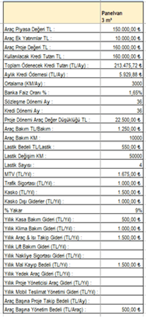
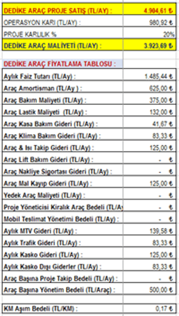

Bize Ulaşın:
hakan.topal@gurnex.com.tr
0 534 735 72 88
Anasayfa / Blog / Serbest Piyasa Ekonomisi Derken Bu Durumu Buhran Ekonomisi Olarak Uygulayan Bireysel Girişimcilerin Yarattığı Kelebek Etkisi
Aslında Pandemi öncesinde şehir içi hızlı teslimat projeleri ilgimizi fazlası ile çekmeye başlamıştı. Bu nedenle Pandemi döneminde bu konuda aksiyon almaya başlayan firmalar için iyi bir iş ortağı adayı olmak adına Yönetim Danışmanlığını yapmakta olduğum firmamız ile hazır bekliyorduk diyebilirim.
İşte tam da bu nedenle diğer birçok benzerlerimiz gibi bu alana yönelme fırsatını kaçırmadık, buraya kadar her şey güzel ve hoş … İhtiyaç duyulan araç filosunun yatırım yapılarak hazırlanması, doğru insan kaynağının bu filo ile buluşturulması ve saha hedeflerinde dağıtım firmasının beklentileri yönünde ve hatta zaman zaman üzerine çıkacak aksiyonların alınması, tüm bunlar bizim asli işimiz olduğu için zorluk çektiğimizi söyleyemem. Hatta asla çizgimizden ve proje maliyet ve karlılık analizi bakış açımızın dışına çıkmadığımızı, bu nedenle her projeye hamle yaparak kendimizi zorlamak ve kaliteden ödün verme riskini yaşamak yerine seçici ve seçilen olmayı tercih ettiğimizi söyleyebilirim.
Tüm bu süreci adım adım hem de tam ortasında yaşadığımız için lojistik sektöründe bireysel girişimcilerin hesapsızlığını, strateji bilmezliğini, kurumsal firmaların rekabet adına gerçek ötesi baskılarını ve çürük temele sahip ve her an yıkılmaya aday iş modellemelerini gördükçe iş hayatında örgütlü toplumun önemini, standardizasyonun ve her ne kadar serbest ekonomi günümüz iş hayatında pek sevilen bir tercih gibi duruyor olsa dahi plansız, kontrolsüz ve hepsinden önemlisi tüm bu sürecin denetimsiz olarak uygulanıyor olmasının büyük sıkıntı olduğunu düşünüyorum …
Profesyonel iş hayatımda yıllarca Tedarik Zinciri Yönetiminden sorumlu oldum, bir üretim şirketinde diyelim ki tedarikçi hatalı bir maliyet çalışması ile yanlış fiyatlama yaptığını kabul edelim ve proje başlasa dahi çok uzun sürmeyecek bir dönemde büyük sorunlar ile sonlanacağı ortada olsun, eski model Satınalma yöneticisi muhtemelen benim için şartname ve teklif formu önemlidir, eğer tedarikçi uygun fiyatı vermiş ise gerisine bakmam geçerim, hele ki bir de güzel bir indirim yakaladıysam bütçe planlaması kapsamında yıllık satınalma tasarruf hedeflerinin karşılanması adına bu harika bir durum olacak diye düşünecek ve buna göre hareket edecektir.
Halbuki bu nedenle; ürün satış fiyat listelerinin olması gerektiği şekli ile güncellenememesinden başlayarak, belki de teknik açıdan çok kabiliyetli ve daha birçok ciddi katma değer sağlayabilecek tedarikçinin motivasyon kaybı ve iflası söz konusu olabilir. Bu nedenle görmezden gelmemek ve eğer ortada proje maliyetlemesi ve strateji açısından ciddi bir sorun varsa bu konuda vakit kaybetmeden gerekli önlemlerin şeffaf bir şekilde ve samimiyet ile alınması gerekir.
Kendi iş hayatımdan örnek vermem gerekirse; bu tarz büyük ölçekli ve uzun dönemli projelerde öncelikle maliyet analizimizi ekipçe kesinlikle yapmışızdır ve eğer teklif veren tedarikçilerden bazıları aşırı düşük fiyat teklifleri paylaşmış ve biz bu firmaların teknik altyapısını, ticari ahlakına güveniyor isek proje detaylarını, nasıl bu seviyelerde çözüm üreteceğini bizimle paylaşmaları istemişizdir. Tabii bu süreci tamamen profesyonelce yürüttüğümüzü ve diğer teklif veren firmalara olumsuz ve adaletsiz bir ortam sağlayacak koşulları asla oluşturmadığımızı eklemek isterim.
Eğer bu değerlendirme süreci sonunda bazı modelleme kabullerinin hatalı, aşırı iyimser veya eksik olduğu tespit etmiş isek kesinlikle firmaya bu konuda uyarımızı yapar ve revizyon talep ederiz. Unutmamak gerekir ki satınalma için tek hedef en uygun kaliteyi en uygun fiyat ile almak değildir, aynı zamanda kurulacak ilişkinin uzun soluklu ve her iki taraf için makul bir denge içinde kurulması da en az bütçe hedefleri kadar ve belki de daha fazla önemlidir. Çünkü sizin için en üstte müşteri olduğunu düşünürseniz, pazarda uzun soluklu ve kalıcı olabilmek için en alttan en üste kadar zincirin tüm halkalarının uyum içinde olması kritik önem taşır. Buraya kadar genel bilgilendirme yaptım diyelim … Gelelim malum lojistik sektörüne ve hızlı teslimat projelerinde yapılan büyük hatalara.
Şehir içi hızlı teslimat projeleri büyük oranda 0 – 5 Desi aralığı üzerinde hedefler ile yürür ve stratejilerini burada belirler, geçen sene pandemi sürecinde hatırlarsanız dağıtım ile ilgili ciddi sorunlar yaşandığı için ciddi talep vardı. Bu dönemde sektöre giriş yapan ciddi sayıda start-up organizasyon oldu, bunların büyük kısmı ise yazılım geçmişine sahip finansman gücü zayıf zeki genç girişimcilerden oluşuyordu.
Her şey güzel gibi duruyor değil mi? Aslında öyle gibi ama zaman içinde bu arkadaşların rekabet adı altında ana müşterileri olan kurumsal firmaların tedarik ekiplerinin baskısı altında nasıl ezildikleri, birbirleri ile rekabet edeceğim diye nasıl hesapsız, plansız ve strateji yoksunu bir şekilde fiyat kırdıklarını gözlemledikçe hayretler içinde kalmaya başladık. Aslında aynı dönemde biz de bu firmalar ile görüşme halinde olduğumuz için bize gelen aşırı düşük fiyatlar için beklemeksizin teşekkür ederek kenara çekildik ve mevcut işlerimize devam ederek sektörün gidişatını seyretmeye devam ettik. Hatta bu alanda bilinen marka bir dağıtım firması 6 – 7 ay önce bizden araç yatırımı istemiş fakat fiyatlama konusunda bireysel girişimcilerin yanlış pozisyon alışları nedeni ile sanki gerçekte bu seviyelerde sağlıklı fiyat varmış gibi hareket ettiğini görür görmez kendimizi değerlendirme sürecinin dışına geçerken, bu şekilde yeterli bütçesi olmadan ve kurye motivasyonu sağlanamayacak bir şekilde başlayan bir şehir içi dağıtım projesinin iyi örnekleri karşısında zafiyet göstereceğini ve başarısız olacağını tüm samimiyetimiz ile paylaşmıştık. Peki ne oldu dersiniz, tabii ki bizi tercih etmediler ve aşırı düşük fiyatlama stratejileri ile yola devam etmeye çalıştılar, ilerleyen süreçte ciddi bir imaj kaybı ve pazar kaybını takiben o dönemde bizimle sanki çok bilinçli hareket ediyormuşçasına görüşen neredeyse tüm tepe yönetim tabiri doğru olursa puf oldu, kayboldu gitti … peki hatalarını görebildiler mi, maalesef sadece isimler değişti. Aslında hatanın farkındalar ama işin içinden çıkamıyorlar, çünkü pazarda rekabet ediyoruz diye yanlış fiyatlama yaptıkları için düşürdükleri satış fiyatlarını yükseltmeleri zaten kalite konusunda da bu dönemde fazlası ile ödün verdikleri için uğraşsalar da artık sahada karşılık bulamıyor maalesef.
Sizinle örnek bir fiyatlama çalışması paylaşacağım ve sonunda yukarıda anlattığım firmaların hangi hedef seviyelerde pozisyon aldığını göreceksiniz ve takiben hayretler içinde bireysel yatırımcıların ne seviyelerde ve neden bu sektörde çalıştığını birlikte sorgulayacağız.
Örneğimizde şehir içi dağıtımda kullanılan 3 m³ Panelvan aracı ele alalım, araç + 4 C° soğutma kabiliyetine sahip olsun ve market dağıtımlarında kullanılsın, aylık 3000 KM civarında ve haftada 7 gün saat sabah 09:00 ile 24:00 arasında çalışacak olsun, bu durumda tabii ki yedek şoför veya eğer bireysel bir yatırımcı iseniz belli günler sizin yerinize çalışacak ve size destek olacak yardımcı personele ihtiyaç duyacaksınız. Biz kurumsal çözüm ürettiğimiz için doğal olarak bu tarz bir projede yedek şöför ve yedek araçları projenin en başında değerlendirir ve ekleriz.
Araç değeri iç izolasyon ve klima dahil aracın yatırım maliyeti 160 k TL olsun ve sözleşme süreside 36 ay olarak kabul edelim. Banka faizi de aylık %1,65 seviyesinde olsun, ayrıca asgari ücretli çalışan bir personelin 4382,44 TL işveren maliyetinin üzerine Kıdem, İhbar, Yıllık İzin, Yemek, İletişim, Servis ve İş Sağlığı & Güvenliği maliyetlerini de eklediğiniz de 2021’de bir asgari ücretlinin yaklaşık 5.500 TL/Ay ile 6.000 TL/Ay arasında maliyetinin olacağını kabul edelim.
Araç için maliyet analizinde temel kabul verileri aşağıdaki gibi olsun;
Bu veriler ile hesaplama yaptığımızda aracın aylık kira bedeli;
Farkındaysanız hesaplanan 4900 TL/Ay + KDV araç kira bedelinin üzerinde henüz yakıt ve personel eklenmiş durumda değil.
Ayda 3000 KM için bu araç tipinde %9 Yakar oranı ile hesaplama yaparsak; Aylık Ortalama Yakıt Tutarı TL/Ay = 3000 KM * 0,09 * 6,20 TL/litre = 1.674 TL/Ay + KDV Diyelim ki %5 Yakıttan indirim aldınız, onu da artık yakıt konusunda karınız olarak görmelisiniz. Bu tarz bir projede 1 aracın aylık maliyetini hesaplarsak;
Aylık Araç Kira Bedeli 4.900 TL/Ay + KDV
Aylık Yakıt Bedeli 1.674 TL/Ay + KDV
Kurye Bedeli 5.500 TL/Ay + KDV
Yardımcı Kurye Bedeli 2000 TL/Ay + KDV (part-time personel olduğu kabulü ile)
Toplam 14.074 TL/Ay + KDV
Size sahadan bu tarz bir proje için örnek bir taşeron fiyatı paylaşayım, siz işin ne derece dramatik bir seviyede olduğunu anlayın isterim. Günde ortalama 50 sipariş teslimatı ve sipariş başında 3,5 TL + KDV (yakıt dahil !!!)
Hesaplayalım; 50 * 3,5 *30 = 5.250 TL +KDV, yok artık demeyin bu seviyelerde çalışan bireysel yatırımcılar var bu ülkede ve bu duruma göz yuman sözde kurumsal organizasyonlar …
SGK ödemediğini düşünün, yine olmuyor değil mi? Esas sorun kulaktan dolma bilgi ile bir yerde maaşlı çalışacağıma kendi işini yapmaya çalışırım derken aynen yazının başlığında paylaştığım gibi yaratılan kelebek etkisi ile mantıksız ve tamamen kısa soluklu ayakta kalma çabası adı altında resmen örgütlü toplumsal bir buhran ortaya çıkıyor.
Bakım, MTV, Kasko ve riskler göz ardı edilmiş, finansal değerlendirme desen zaten hiç yok, amortisman ise İstanbul’da bir semt adı olsa gerek, acaba kendi kendilerine soruyorlar mıdır, ben tüm bu gider kalemlerini fiyatlama sürecinde dikkate almazsam 2-3 sene sonra aracımı nasıl yeniler veya daha önemlisi işimi nasıl geliştiririm. Bu seviyelerde motivasyondan bahsetmekte gerçekçi olmaz herhalde.
Bunların bir de büyük abileri var, size tavsiyem bir kargo acentesine gidin ve eğer lojistik süreçlerine ilginiz varsa kendi hallerine terk edilmişliği, umutsuzluğu, hareketlerdeki kabalığı gözlemleyin … Aslında ana sebep strateji de ama çalan da oynayanda aynı kişiler olunca çözüm olamıyor maalesef, ciddi bir denetim, standardizasyon ve örgütlü bir yapılanmanın gerektiği net fakat çözüm nasıl ve nereden gelir inanın ben de bilemiyorum.
Son olarak geçen ay içinde şehir içi dağıtım projelerinde ciddi kontrat bağlayan bir firma bizden araç talep etti, ama maalesef yukarıda ki hesap modeli nedeni ile 2 katı yüksek seviyede kaldık , firma sahibi arkadaşımız sektördeki rekabetten, bireyselin fiyat seviyelerinden bahsetmeye başladı, sonrasında kendisine kibarca bu seviyelerde pazarda büyümekten ise kaliteden ödün vermeden mevcut işlerimizi korumayı ve sizleri seyretmeyi tercih edeceğimizi , pazarı bozan firmalardan önemli birisinin kendi işletmeleri olduğunu hatırlatarak, muhtemelen bu tarz hareket eden çoğu firmanım 2 veya 3 sene içinde iflas edeceğini , eğer bu firmalardan sistem altyapısı kuvvetli ve kullanılabilir bir firma tespit edebilirsek uygun şartlarda yatırım yaparak yanlış yönetilmiş bu firmayı satın almayı dahi düşünebileceğimizi , bizce bekle gör stratejisinin daha uygun bir karar olduğunu paylaştım. Tabii biraz şaşırdılar ama samimiyetimizin farkında oldukları için konuyu kibarca karşılıklı komplimanlar ile ve ilerde tekrar bir araya gelme temennileri ile kapattık.